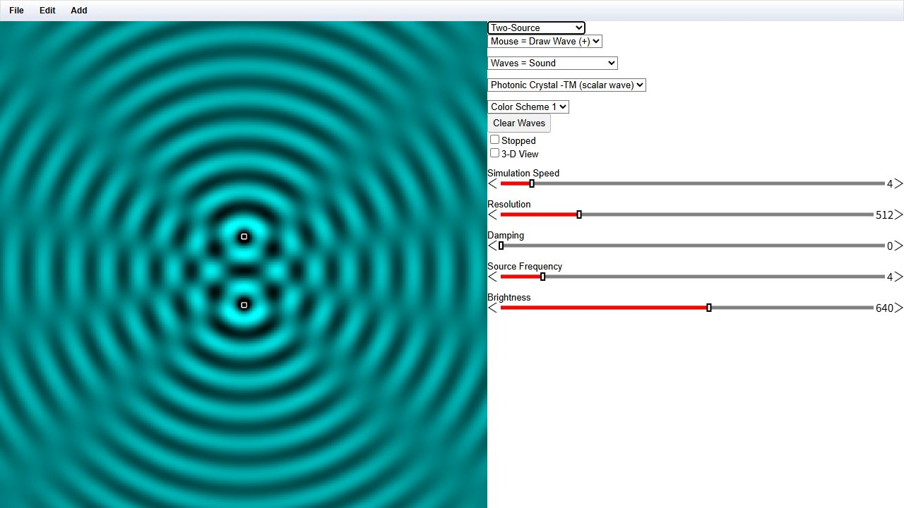
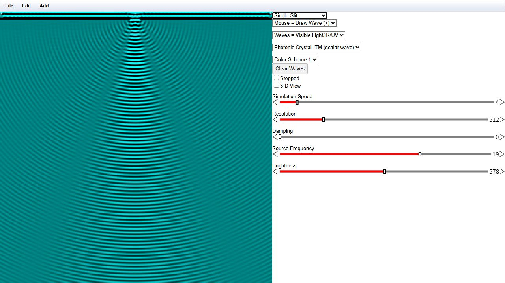
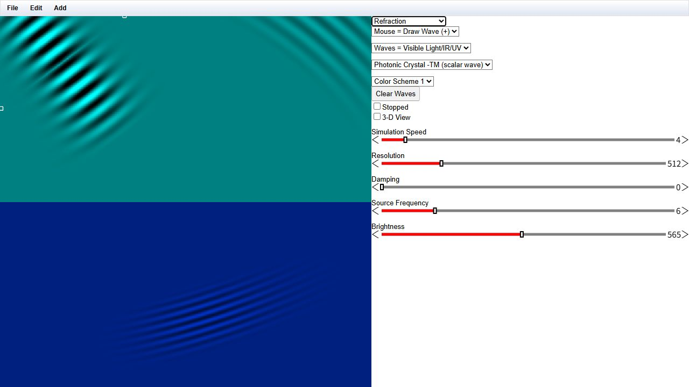

Wave experiments in the real browser app
Unmodified screenshots captured through the existing browser tools on 2026-10-17. The deployed page loads and each selected preset renders.
English README · 中文 README · Parameters & provenance manifest
Symbols, units and evidence
Color Scheme 1 displays signed wave amplitude with a zero-level background; color is not an energy-density measurement. Physical axis calibration is not supplied in these screenshots.
All captures use Photonic Crystal -TM (scalar wave), resolution 512, speed 4 and damping 0. Two-Source uses Waves = Sound; the other two use Visible Light/IR/UV.
These are dynamic snapshots, not calibrated or converged field data. Source frequency and brightness slider values are recorded in the manifest.
Deployment: https://patr1ck2005.github.io/EM-Flow/. Its commit is unknown, and its preset list differs from the inspected source. No local source build is implied. Inherited source: Paul Falstad / Ripple, GPL-2.0-or-later.

Two-source interference
Real application capture. Sound setting; frequency slider 4; brightness 640. Two coherent sources produce alternating interference fringes.


Single-slit diffraction
Real application capture. Visible-light setting; frequency slider 19; brightness 578.


Crossing a medium interface
Real application capture. Visible-light setting; frequency slider 6; brightness 565.